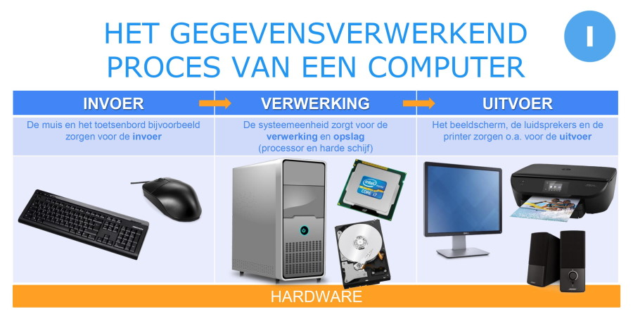

1. Invoer (Input):
Invoer is het eerste stadium van de computerwerking. Het omvat het verzamelen van gegevens en opdrachten van externe bronnen en ze naar de computer brengen. Dit proces wordt meestal uitgevoerd met behulp van invoerapparaten, zoals toetsenborden, muizen, microfoons, camera's, scanners en sensoren. Invoerapparaten zetten fysieke acties of gegevens om in elektrische signalen die de computer kan begrijpen.
2. Uitvoer (Output):
Uitvoer is het stadium waarin de resultaten van de verwerking aan de gebruiker worden getoond of naar externe apparaten worden gestuurd. Dit kan visuele, auditieve, tactiele of andere vormen van informatie zijn, afhankelijk van het soort gegevens dat wordt verwerkt en de doelen van het systeem. Uitvoerapparaten omvatten beeldschermen, luidsprekers, printers, enzovoort. Ze zetten elektrische signalen om in begrijpelijke informatie voor mensen of andere apparaten.
3. Verwerking (Processing):
Na de invoer volgt de verwerking. Dit is het hart van de computer, waar gegevens worden verwerkt en gemanipuleerd om de gewenste resultaten te produceren. Het belangrijkste component voor verwerking is de centrale verwerkingseenheid (CPU). De CPU voert instructies uit die zijn opgeslagen in het geheugen en voert berekeningen uit, neemt beslissingen en coördineert alle activiteiten binnen de computer. Software, zoals besturingssystemen en toepassingen, bepaalt welke specifieke taken de computer moet uitvoeren tijdens de verwerking.
4. Opslag (Storage):
Opslag is het proces waarbij gegevens op lange termijn worden bewaard, zodat ze kunnen worden opgeroepen en opnieuw kunnen worden gebruikt wanneer dat nodig is. Computers hebben verschillende soorten opslagapparaten, zoals harde schijven, solid-state drives (SSD's), USB-stations en optische schijven. Deze apparaten slaan gegevens op in de vorm van elektrische ladingen, magnetische signalen of andere fysieke representaties. Het opgeslagen geheugen kan worden gebruikt om bestanden, programma's en systeeminformatie op te slaan.
Lees meer over CPU op deze pagina.
